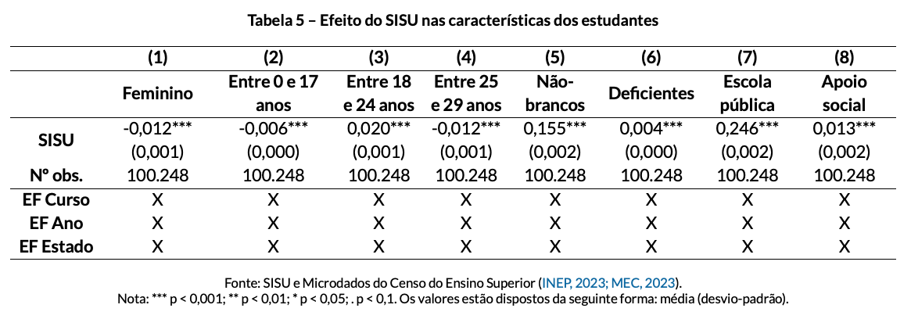
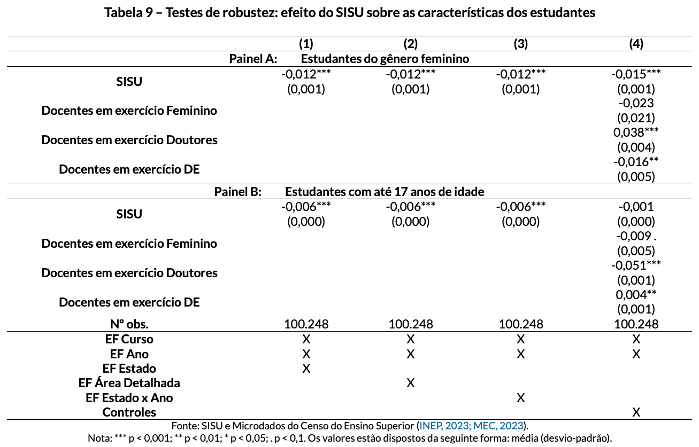

O IMPACTO DO SISU NO PERFIL DOS ESTUDANTES INGRESSANTES NAS INSTITUIÇÕES PÚBLICAS BRASILEIRAS
UMA ANÁLISE PARA O PERÍODO ENTRE 2009 E 2022
11 de julho de 2024
Introdução
É possível perceber uma desigualdade no acesso ao ensino superior no Brasil (Mello, 2022; Senkevics; Mello, 2019; Zeidan et al., 2023).
Essa barreira ao acesso universitário enfrentada pelas camadas sociais mais pobres contribui para a manutenção da desigualdade de renda e para a redução da mobilidade social (Mello, 2022).
A percepção de que o acesso desigual à universidade pode estar contribuindo para o aumento das desigualdades levou o governo federal a adotar medidas centralizadoras, a fim de intensificar a expansão do ensino público no Brasil:
na década de 1990, ampliação do número de vagas e matrículas em IES federais;
em 2009, o Exame Nacional do Ensino Médio (ENEM) foi reformulado;
em 2010, foi criado o Sistema de Seleção Unificada (SISU).
Tal democratização pode ser justificada pelo pressuposto de que o investimento em educação gera mão-de-obra qualificada, elevando a renda e, consequentemente, ocasionando o crescimento econômico do país (Monteiro; Mazoto; Cunha, 2016; Jia; Li, 2017).
Objetivos
Investigar se, e como, a implementação do SISU promoveu alterações nas características de perfil dos alunos ingressantes nas instituições públicas gratuitas de ensino superior no Brasil, entre o período de 2009 e 2022.
Gênero;
Idade;
Cor/Raça;
Deficiência e/ou Superdotação;
Provenientes de ensino médio concluído em escola pública;
Necessitam de algum apoio social.
Background Institucional
O sistema de ensino superior brasileiro é composto por 2.595 instituições, sendo 312 públicas e 2.283 privadas (INEP, 2023).
As instituições federais e estaduais são, por lei, gratuitas, oferecendo um número limitado de vagas e sendo reconhecidas por sua alta qualidade.
Esses atributos costumam atrair um número considerável de candidatos, tornando o acesso à graduação pública extremamente competitivo e seletivo (Estevan; Gall; Morin, 2019; Machado; Szerman, 2021; Mello, 2023).
Até 2010, o ingresso era completamente descentralizado; os candidatos se inscreviam em cada instituição de interesse e precisavam realizar uma prova específica, o vestibular.
Com o objetivo de democratizar o acesso às instituições públicas de ensino superior, o Ministério da Educação introduziu uma série de reformas, sendo as mais importantes:
reformulação do Exame Nacional do Ensino Médio (ENEM);
criação do Sistema de Seleção Unificada (SISU).
ENEM
Criado em 1998, consistiam em um exame opcional, realizado em um dia, para avaliar a qualidade do ensino médio brasileiro.
Em 2009, com a reformulação, tornou-se mais rigoroso. Realizado simultaneamente em todo o país, em dois dias, uma vez ao final do calendário escolar, com 180 questões de múltipla escolha e uma redação.
Dada a sua relevância para o ingresso nas instituições públicas, o número de inscritos no ENEM apresentou aumento expressivo (Machado; Szerman, 2021):
em 1998, teve pouco mais de 157 mil participantes (INEP, 2006);
em 2023, atingiu 3,9 milhões de inscritos (INEP, 2023);
em 2014, ocorreu o recorde de canditados inscritos, com 8,7 milhões (INEP, 2023).
SISU
Criado em 2010, com o objetivo de ampliar o acesso ao ensino superior e a mobilidade acadêmica (Mello, 2022; Monteiro; Mazoto; Cunha, 2016).
Plataforma de admissão centralizada, onde as instituições federais e estaduais de todo o país oferecem suas vagas, e os alunos se candatam a elas com base em suas notas do ENEM.
Apesar da descrença inicial, sobre a capacidade de seleção do novo sistema e da aplicabilidade de um exame de tamanha importância em âmbito nacional, tanto o ENEM quanto o SISU construíram uma sólida reputação.
A adesão voluntária das instituições a esse sistema aumentou progressivamente, tornando-se o principal meio de ingresso (Machado; Szerman, 2021; Mello, 2022):
entre 2010 e 2022, o número de instituições que utilizaram o SISU cresceu de 59 para 128;
2017 foi o ano com maior número de participantes, com 132 instituições.

Revisão da Literatura
Machado e Szerman (2021): declínio na proporção de estudantes do sexo feminino e aumento na idade média dos alunos admitidos, não sendo encontradas mudanças na composição racial ou socioeconômica; aumento do número de matrículas de alunos de fora dos estados de origem e aumento das notas médias de corte.
Kamis, Pan e Seah (2023); Rosinger, Ford e Choi (2021) e Zeidan et al. (2023): ao invés de aumentar a inclusão de alunos não-brancos e economicamente desfavorecidos, a centralização pode reduzir o acesso a esses alunos.
Ristoff (2014): queda no ingresso de alunos brancos nos cursos de graduação e de estudantes de classe média alta, e aumento no número de estudantes que completaram o ensino médio em escola pública.
Mello (2022): políticas que reduzem custos de incrição podem aumentar as matrículas de estudantes de baixa renda no ensino superior.
Knight e Schiff (2022): nos Estados Unidos, o Commom Application aumentou o ingresso de estudantes de alta renda e que moram fora do estado da univerisade, além de elevar a fração de estudantes não brancos, aumentando a diversidade racial.
Dados
Os dados utilizados foram obtidos junto ao Ministério da Educação:
Censo do Ensino Superior: realizado anualmente pelo INEP, fornece informações, a nível de instituições e de cursos, sobre os programas de graduação e pós-graduação, corpo técnico-administrativo e docentes, além de informações de vagas oferecidas, matrículas, ingressantes e concluintes;
Relatórios sobre a quantidade de vagas ofertadas para cada curso participante do SISU.
RESTRIÇÕES
Período amostral limitado entre os anos de 2009 e 2022;
Mantidas as instituições públicas federais e estaduais;
Mantidos apenas os cursos de graduação presenciais;
Desprezados os cursos que apareciam em apenas um ano, além daqueles que só possuíam ingressos através do SISU.
Variáveis Dependentes
Estatísticas Descritivas
Modelo Empírico
É usado o método de Diferenças em Diferenças:
\[ Y_{cte} = \beta SISU_{ct} + \alpha_{c} + \alpha_{t} + \alpha_{e} + \epsilon_{cte} \qquad(1)\]
\(Y_{cte}\) é a variável dependente, que representa o perfil dos alunos ingressantes no curso \(c\) do ano \(t\) no estado \(e\);
\(SISU_{ct}\) é uma variável dummy que indica se o curso \(c\) aderiu ao SISU no ano \(t\); \(SISU = 1\) se o curso aderiu ao SISU e \(SISU = 0\) caso contrário;
o coeficiente \(\beta\) representa o efeito causal da introdução do SISU sobre o perfil dos alunos ingressantes;
\(\alpha_{c}\), \(\alpha_{t}\) e \(\alpha_{e}\) são os efeitos fixos de curso, de ano e de estado, respectivamente;
\(\epsilon_{cte}\) é o termo de erro.
Será analisado o perfil dos estudantes ingressantes de cada curso e instituição, comparando cada curso e instituição com ele mesmo antes e depois da adesão ao SISU.
Para capturar os impactos dinâmicos da adoção do SISU ao longo do tempo, será realizado uma análise de event-study.
\[ Y_{cte} = \sum_{k=-4}^{k=12} \beta_{k} \times 1(t_{c} = t^{*} + k) \times SISU_{ct} + \alpha_{c} + \alpha_{t} + \alpha_{e} + \epsilon_{cte} \qquad(2)\]
\(Y_{cte}\) é a variável dependente, que representa o perfil dos alunos ingressantes no curso \(c\), no ano \(t\) e no estado \(e\);
\(1(t_{c} = t^{*} + k)\) são dummies que indicam o evento no ano \(k\) relativo ao ano \(t^{*}\) quando o curso \(c\) adotou o ingresso pelo SISU;
\(SISU_{ct}\) é uma variável dummy que indica se o curso \(c\) aderiu ao SISU no ano \(t\); \(SISU = 1\) se o curso aderiu ao SISU e \(SISU = 0\) caso contrário;
o coeficiente \(\beta_{k}\) captura os efeitos dinâmicos da adoção do SISU relativos ao ano anterior ao evento;
\(\alpha_{c}\), \(\alpha_{t}\) e \(\alpha_{e}\) são os efeitos fixos de curso, de ano e de estado, respectivamente;
\(\epsilon_{cte}\) é o termo de erro.
Resultados
Event-Study
Para ter maiores informações sobre a dinâmica das mudanças na composição dos alunos ao longo do tempo, será realizado um estudo de eventos a partir da Equação (2).

Heterogeneidade
Teste de Robustez
Conclusões
A adoção do SISU é considerada uma política educacional importante, uma vez que busca proporcionar um acesso mais democratizado aos candidatos a uma vaga no ensino superior público brasileiro;
Os resultados encontrados indicam que a implementação do SISU promoveu alterações nas características de perfil dos alunos ingressantes nas instituições públicas gratuitas de ensino superior no Brasil. Houve:
uma redução de estudantes:
- do sexo feminino;
- com até 17 anos;
- entre 25 e 29 anos;
um aumento de estudantes:
- entre 18 e 24 anos;
- não-brancos;
- com deficiência;
- provenientes de escola pública;
- que recebem algum tipo de apoio social.
Muito obrigada!
Slides por Luísa Gisele Böck, feito com Quarto. Código disponível no GitHub.